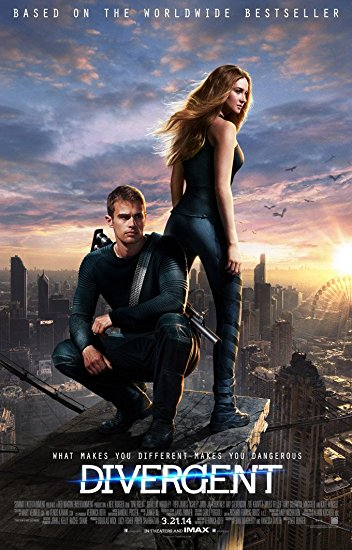
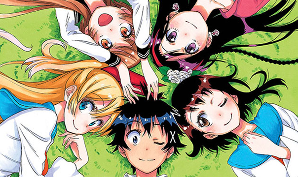

Simple Things That I Hate
- The taste of bitter vegetables
- The color orange because it is too bright for my eyes
- Least favorite book is called
- Divergent series, because it never followed the book and it became worse unil the last movie <
br>
-
The gummy bear song is what I hate the most as it is annoying to listen and makes me wish that I never listened to it
- The hatest movie that I have watched was the movie
- Harem, an anime genre that has a lot of female supporting characters who are inlove with the same guy (the male protagonist)

-